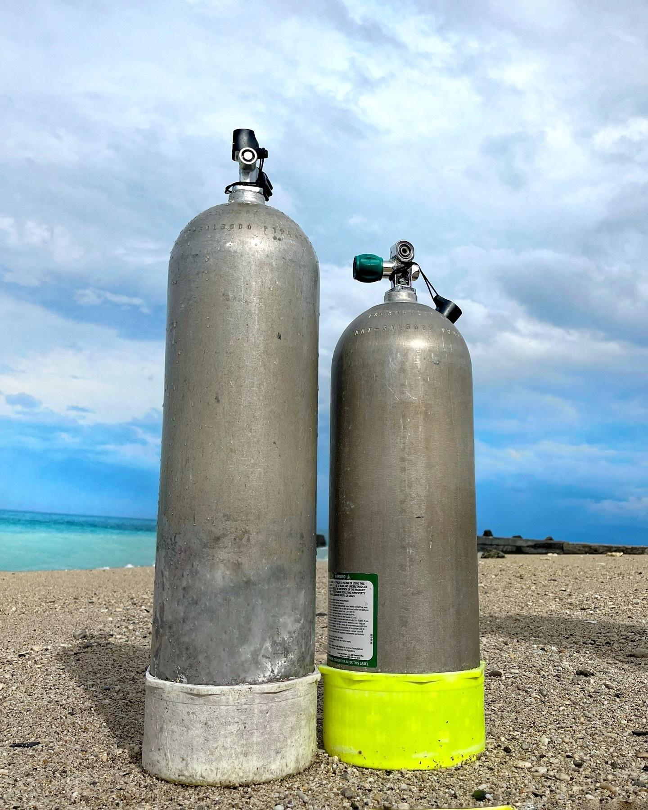

أكملتم التدريب – أحسنتم!
لأن التعلم يحدث بأشكال مختلفة.
تأمّلوا أسطوانتَي الغوص في الصورة.
كلتاهما تُستخدمان لتخزين الهواء، لكنهما تختلفان في الحجم.
مهمّتكم:
اكتبوا في الدفتر سؤال بحث واحدًا يتعلّق بأسطوانات الغوص وبخصائص الغاز التي تعلّمتموها.
انتبهوا!
سؤال البحث الجيد هو سؤال يمكن فحصه بواسطة تجربة أو قياس، وليس سؤالًا يُجاب عنه بالاعتماد على معرفة سابقة فقط.
